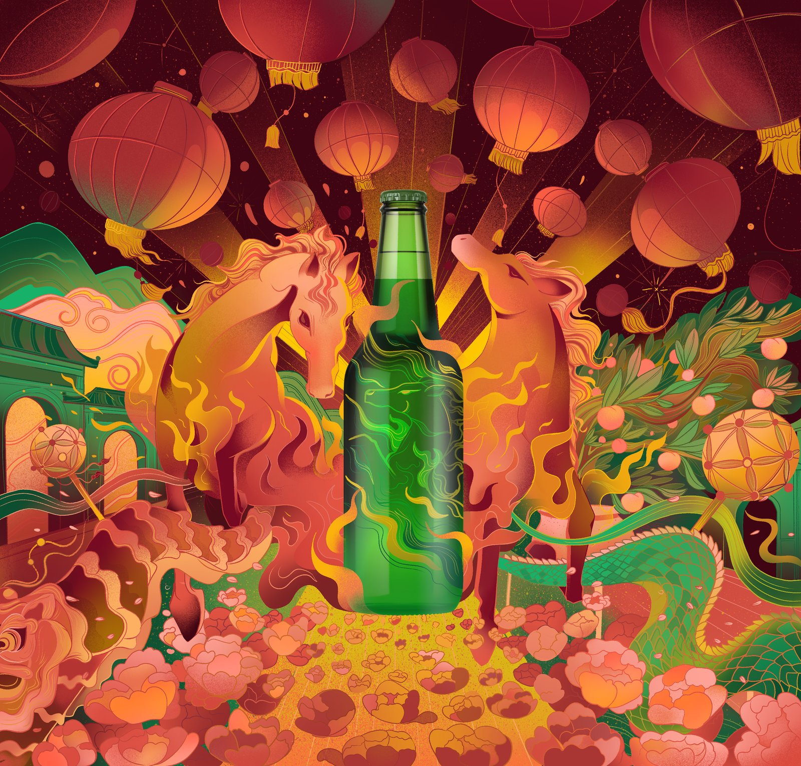

Created for Carlsberg as part of a mentorship project with itsme.biz, this piece celebrates the Chinese New Year of the Horse. Working within the brand's color palette, two horses flank a bottle beneath glowing lanterns and blooming peonies — a festive design built around the energy, strength, and renewal the Horse represents.
